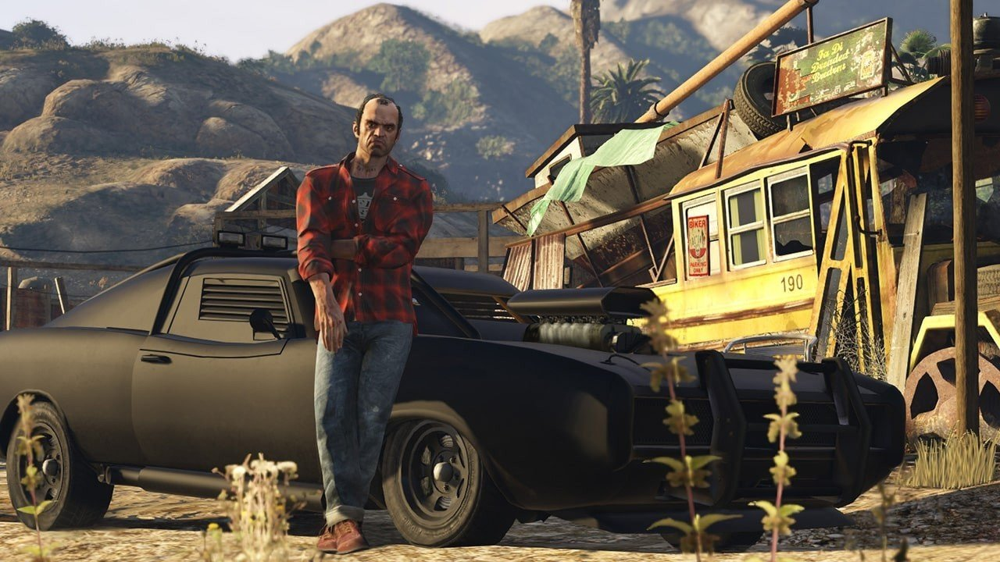
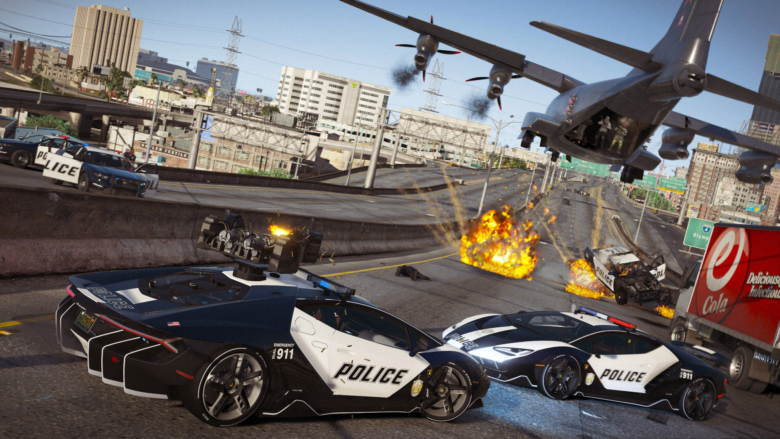
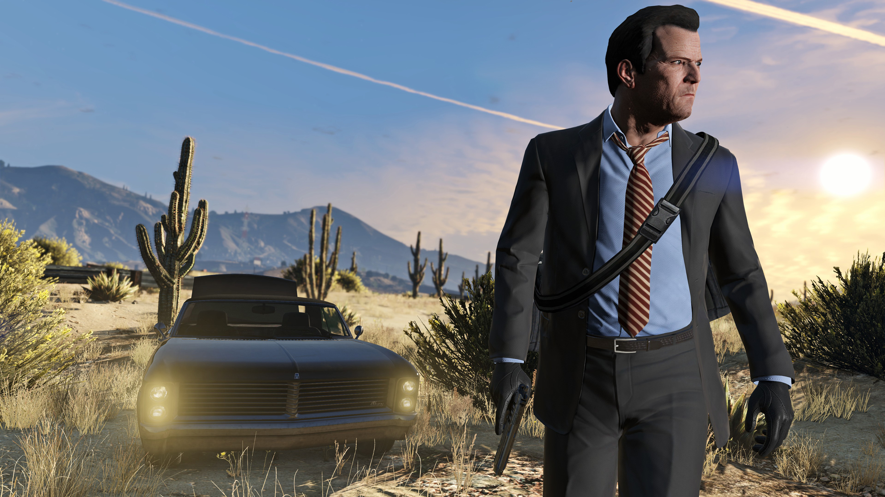

Моды для GTA V
Лучшие модификации для Grand Theft Auto V: улучшение графики, новые машины, оружие, персонажи и геймплей
Категории модов
Топ модов месяца



Установка модов
Установка OpenIV
Скачайте и установите OpenIV - основной инструмент для работы с модами GTA V.
Скачать OpenIVСоздание резервной копии
Перед установкой модов сделайте резервные копии оригинальных файлов игры.
Установка Script Hook V
Большинству модов требуется Script Hook V для работы скриптов.
Скачать Script Hook VУстановка модов
Следуйте инструкциям для каждого конкретного мода. Обычно файлы нужно поместить в папку "mods" (если используется OpenIV) или в корневую папку игры.
Запуск игры
Запустите игру через обычный ярлык. Для некоторых модов могут потребоваться дополнительные шаги.
Важно!
Использование модов в GTA Online может привести к бану вашего аккаунта. Устанавливайте моды только для одиночной игры и отключайте их перед входом в онлайн-режим.